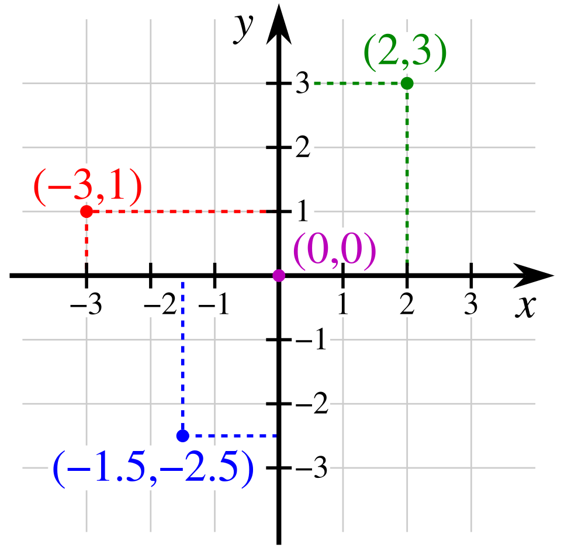

(2, 5): two steps east, five steps north — you're there!
Is (3, 7) on the line y = 2x + 1? Test: 2 × 3 + 1 = 7 ✅ Yes!
y = x + 1 meets y = 2x − 2 at (3, 4) — a point obeying BOTH rules.
(x − 3)² + (y − 4)² = 25: every point exactly 5 units from (3, 4).
Those four lines are algebraic geometry in action — the part of math where shapes and equations turn out to be the same idea wearing two different costumes. The first line gives a point's address on a map made of numbers. The second asks whether a point belongs to a line — and answers with one tiny computation. The third finds the single point where two lines shake hands. And the fourth? One short equation draws an entire perfect circle. Right now those lines might look a little mysterious. That's okay! By the end of this lesson, you'll do all four yourself — and you'll be able to prove exactly why each one works.
Why do people care? Because this is the math that makes computers DRAW! Every video game world sits on a grid of numbered addresses. Every curve your phone displays — every letter in this very font! — comes from an equation telling pixels where to light up. GPS pins your position with two numbers, robots steer by coordinates, and 3D printers follow shapes made of rules. Algebraic geometry is the dictionary that translates between shapes you can SEE and equations you can COMPUTE — and once you know both languages, you can answer questions in one that look impossible in the other.
In this lesson, you will:
- 1.Learn the coordinate plane — a map made of two number lines
- 2.Learn to plot points, name quadrants, and reflect across axes
- 3.Learn the big secret: an equation is a club rule that draws a shape
- 4.Learn the membership test — and run it BACKWARDS to find missing coordinates
- 5.Learn slope — including downhill, flat, and vertical lines
- 6.Learn y = mx + b — and the slopes of parallel and perpendicular lines (with the proof of the perpendicular rule!)
- 7.Learn TWO ways to find where lines meet — and how algebra counts the meetings before you ever draw
- 8.Learn the distance formula, midpoints, and the equation of a circle
- 9.Learn parabolas, transformations, and where lines meet curves
- 10.Learn the common mistakes so you never make them
- 11.Practice with 100 problems — including 20 real brain-stretchers!
How to use this lesson: Read the sections in order. Each section starts with the key idea you'll learn in it. Take your time, and try every "Your Turn" box with a pencil and paper. Keep graph paper nearby — drawing the points yourself is where the magic happens. (No graph paper? Two crossed number lines on plain paper are all a coordinate plane is!) Ready? Let's go!
📸 Pictures
René Descartes (1596–1650) had the idea of giving every point an address (x, y). That's why it's called the Cartesian plane! See source ↓

The coordinate plane: two number lines that cross at zero. Every point has its own (x, y) address, like (2, 3) or (−3, 1)! See source ↓
🗺️ Your lesson map
Two Number Lines, One Map 🧩Lesson 2
Plotting Points, Quadrants, and Mirror Tricks 🎯Lesson 3
Rules That Draw Shapes 🔍Lesson 4
The Membership Test — Forwards and Backwards ⚡Lesson 5
Slope — Measuring the Tilt 🌟Lesson 6
From Rule to Line — y = mx + b, Parallels, Perpendiculars 🛠️Lesson 7
Where Lines Meet — Two Methods, Three Possibilities 🎨Lesson 8
Distance, Midpoints, and the Circle's Equation 🏗️Lesson 9
Parabolas, Transformations, and Where Lines Meet Curves ⚠️Lesson 10
Watch Out! Common Mistakes 🧠Lesson 11
Review — The Big Picture 🏋️Practice Problems
100 problems to try 🏆Quiz
Test yourself: new questions every time!
📚 Picture Sources
- Picture 1 · Frans Hals - Portret van René Descartes. By After Frans Hals. Public domain. From Wikimedia Commons: https://commons.wikimedia.org/wiki/File:Frans_Hals_-_Portret_van_René_Descartes.jpg
- Picture 2 · Cartesian-coordinate-system. By K. Bolino. Public domain. From Wikimedia Commons: https://commons.wikimedia.org/wiki/File:Cartesian-coordinate-system.svg